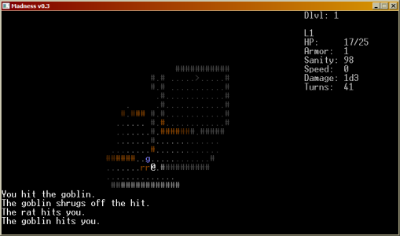

by hmp
Madness is a 2010 seven-day roguelike about darkness and insanity.
It's written in Python and libtcod.
Version 1.0 (7DRL release) -
includes source code; runs under Windows and Linux.
Version 1.0+fix - Now also bundled with 64-bit
libtcod shared library, so it should work under Linux x64 as well.
Running under Linux - execute python madness.py. You need SDL library.
Running under Windows - run madness.exe.
If you get a "MSVCR90.dll not found" error, you need the
Microsoft Visual C++ 2005 Redistributable Package (2.6 MB). This is a Python runtime's dependency.